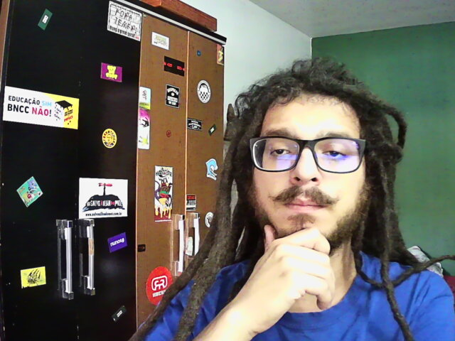

Quem sou e de onde eu falo
Olá, meu nome é Vinicius, tenho 27 anos e estou no caminho para ser um desenvolvedor Web.
Nasci e moro em Paranaguá, cidade litorânea do Paraná. Um lugar relativamente calmo, banhado pelo rio Itiberê, e que possui um dos maiores portos do Brasil. Envolta pela cultura caiçara, minha cidade é berço das mais diversas comunidades tradicionais, as quais hoje ainda abrigam algumas famílias indígenas, de pescadores artesanais e comunidades quilombolas – muitas destas diretamente dependentes da rica biodiversidade dos manguezais da região.
Me apresento através dessa foto, que é o lugar de onde escrevo: meu quarto, local de maior produtividade para mim; onde desenvolvo meu conhecimento, aprimoro minhas habilidades e arquiteto meus planos para alcançar meus objetivos. Hoje, a Trybe é a extensão do meu espaço e convidada especial do meu lar. Com um time excelente que, com muita boa vontade e disposição, me guiará através do curso de programação rumo ao sucesso na carreira em tecnologia, além de contribuir em meu desenvolvimento pessoal.
Jornada acadêmica
Antes de conhecer a Trybe, eu estava focado em meu Trabalho de Conclusão de Curso (TCC) num curso de licenciatura em Ciências Sociais. O processo de escrita caminhava tranquilo, eu tinha bastante material de pesquisa e sabia como deveria ser feito. Além disso, o conteúdo teórico do curso e o corpo docente da instituição me deram um excelente suporte em minha jornada. No entanto, o inusitado cenário de 2020 desencadeou mudanças, tanto externas quanto internas, e acabei repensando sobre minha carreira profissional após ver um anuncio da Trybe. Ao considerar que tenho background em tecnologia, a oportunidade de voltar a estudar programação em uma modalidade tão desafiadora me chamou muito a atenção, além de, claro, a garantia do sucesso. Durante muito tempo exercitei o meu olhar, me atentando às diferentes realidades culturais, diferentes visões de mundo. Isso decorre da minha área de estudos: a Antropologia – área de conhecimento que procura entender o ser humano a partir de seu contexto cultural. Devido ao meu background em programação, me interessei inicialmente pelo estruturalismo de Levi-Strauss (1958), conheci o incrível método "ver, ouvir e escrever" de Roberto Cardoso de Oliveira (1998), bem como as mentalidades nativas com Eduardo Viveiros de Castro (1996), até finalmente chegar ao objeto de minha pesquisa: Rituais, sob as definições de Marcel Mauss (1950), Peirano (2002) e Tambiah (1979).
Essa conotação mostra complexidades que até então não se tem noção, coisas que só o outro pode lhe informar. O contato com a alteridade de outros povos, outras religiões, outras formas de interação e outros “padrões”, força o pensamento sobre si mesmo, agregando então ferramentas de outros para programar o próprio mundo. Nesse rolê eu aprendi que o mundo nunca esteve pronto, tudo está aqui porque houve trabalho de nossos ancestrais, e a Antropologia me levou a conhecer o sentido humano das palavras conhecimento e respeito.
Querer aprender talvez seja o meu maior valor.
Habilidades
- Aprender a aprender
- Iniciação à docência
- Técnico de informática da vizinhança
- HTML
- CSS